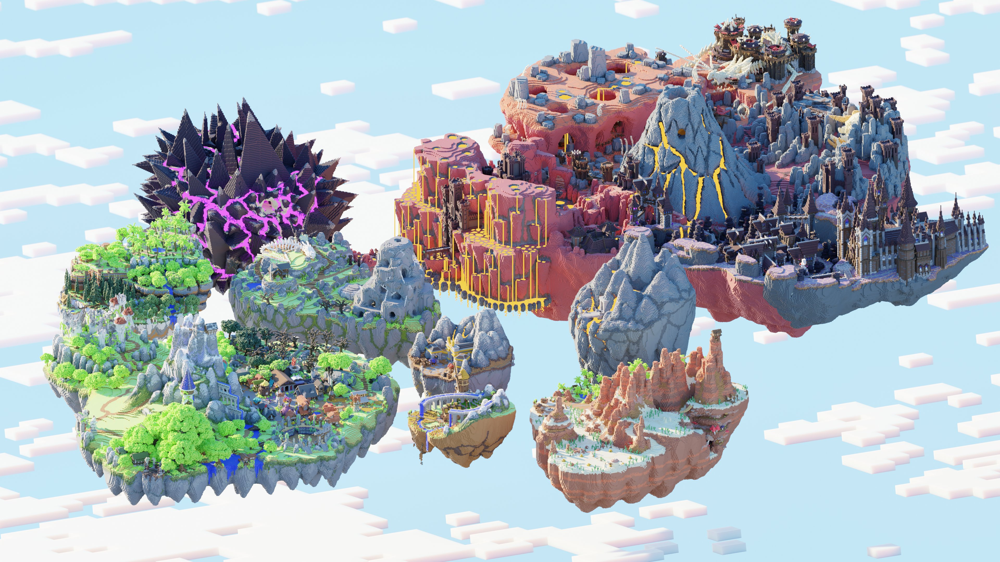

A (breif) guide to Hypixel Skyblock (Dungeons and Combat)
By Shray K.
please subscribe!
What is Hypixel Skyblock?
- It's a game
- In a game
- (more specifically:)
- Game made in Minecraft from someone
- lots of developers making updates
- and the main thing we are focusing on is...
DUNGEONS (and combat)
This is how the whole map of Skyblock (the game in Hypixel) looks like:

So... What is dungeons in this game?
Dungeons are:
- A combat locked area in Skyblock (requiring combat level 15 to enter the dungeons)
- They are a big map with puzzles, mini-bosses, and a trap as major rooms to gain score,
- normal rooms to clear out for secrets, and the whole point:
- fighting through the dungeon to get to the blood room and enter into the boss fight!
OKAY. That seems cool, but why do it?
SHRAY K's REASONS ON WHY DUNGEONS IS EPICC (and why people do it)
- FUN - Dungeons is probably the most interactive and skill based parts of Skyblock, with skill being able to outclass money!
- BRAIN NEEDED - Dungeons needs your attention as mobs are trying to kill you, and a core mechinism of dungeons are that you can get secrets (hiden chests) to increase your score.
- MONEY - Dungeons make a LOT of in-game currency IF you get a score over 300 to unlock the final reward chest, and get lucky enough to get the rarest items in the game!
Conclusion:
Dungeons in Hypixel Skyblock offer a thrilling and multifaceted experience that goes beyond traditional gameplay. They combine strategic combat, problem-solving, and teamwork, making them a core feature for players looking for a challenge. As players delve deeper into the dungeons, they encounter puzzles, mini-bosses, and an array of hidden secrets, all while battling through increasingly difficult rooms. The ultimate reward—tackling the final boss and earning rare loot—keeps players coming back for more.
I want to mention on how much I didn't cover overall due to how vast the game of Skyblock is, and how even in just a singular section on it, how complex it is! In the photo gallery, you can find out a bit more on Dungeons with examples of imagrey but in the end:
I hope you liked my site!